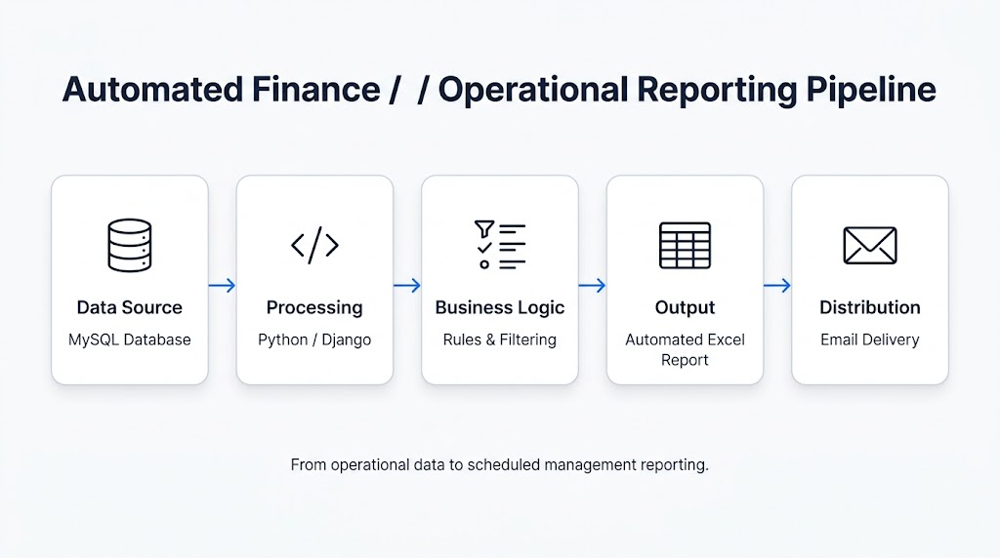
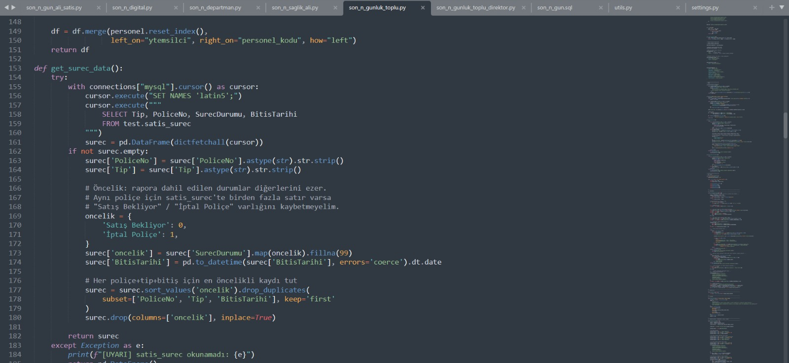

Recurring operational reporting
Users needed regular visibility into open and pending operational items based on defined dates, process statuses and business criteria.
PYTHON · MYSQL · EXCEL AUTOMATION · REPORTING
An end-to-end reporting workflow that transforms operational data into structured Excel reports and automatically distributes the finished output to the relevant users.
Operational reporting required recurring data checks, business-rule filtering, Excel preparation and report distribution. Performing these steps manually created repetitive work and increased the risk of inconsistent reporting.
Users needed regular visibility into open and pending operational items based on defined dates, process statuses and business criteria.
Reporting logic needed to apply the same filtering, prioritization and classification rules every time the report was produced.
I built an automated reporting workflow that connects operational data, Python-based processing, business rules, structured Excel reporting and email distribution.
The project combines data extraction, programming, reporting controls and operational automation rather than automating only a single Excel task.
The following views show the reporting process from the underlying workflow and processing logic to the final Excel report and its automated delivery.

Operational data moves from MySQL into Python and Django, where business rules and filtering logic are applied before an Excel report is produced and distributed by email.
Gain: One automated flow takes the data from its source to the final report without requiring the same manual steps to be repeated.
View full-size image ↗
Python connects to the operational data source and applies reporting rules such as process status, dates, priorities and duplicate handling before report generation.
Gain: The same reporting rules are applied consistently by code instead of being checked manually each time.
View full-size image ↗
The processed data is transformed into a structured Excel report containing a summary view designed for quick operational review.
Gain: Users receive a ready-to-use report instead of building the summary manually from raw data.
View full-size image ↗
Once report generation is complete, the Excel output is attached to an automated email and distributed to the relevant users.
Gain: The finished report reaches its users automatically, reducing manual sending and follow-up work.
View full-size image ↗You can reach me through the channels below.